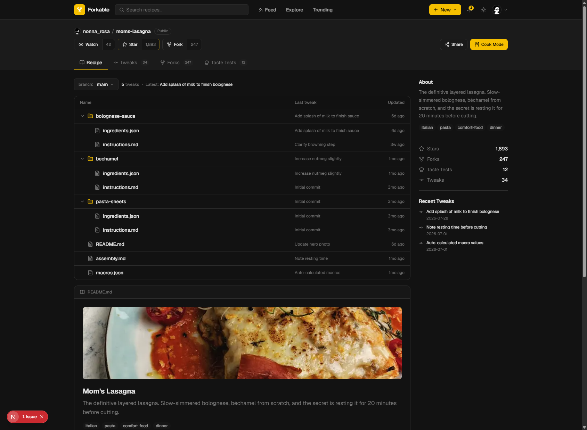
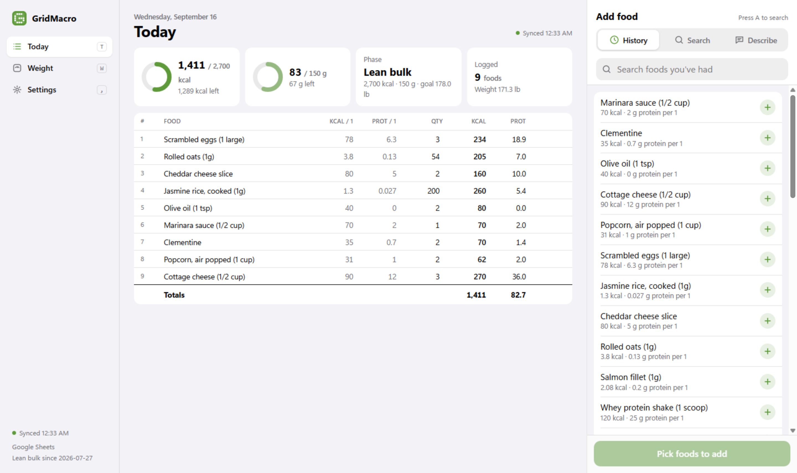

Forkable
Version control for recipes
Fork a recipe, commit tweaks, and diff versions down to the ingredient. A 21-model Postgres schema with 83 tests in CI.
Computer Science, Toronto Metropolitan University. Graduating May 2027.
months interning at Geotab, AMD, and Bombardier.
Telemetry dashboards on BigQuery for 1,000+ IoT units. Chrome extensions that cut manual firmware verification by 80%. Intern of the Month, Jan 2026.
A Python benchmark framework that cut runtimes by 60%, and an Arduino rig for sub-millisecond input latency.
TypeScript pipelines into Power BI that cut compliance report time by over 70%.

Fork a recipe, commit tweaks, and diff versions down to the ingredient. A 21-model Postgres schema with 83 tests in CI.

I built it for my own cut. The spreadsheet stays the database and logging a meal takes two taps.
“Shrey was instrumental in taking a new hardware product from early concept to market.”
Rob Wyatt